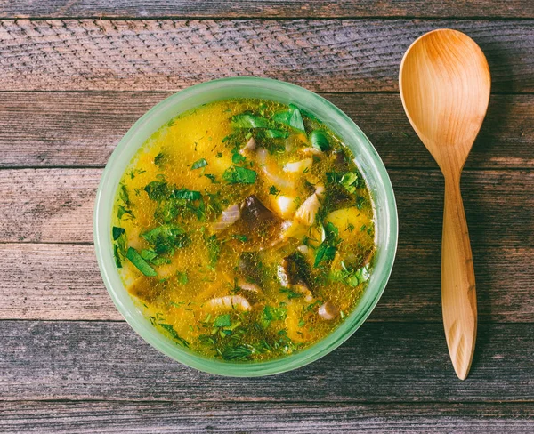

CATEGORY
La Sopa de pollo
se sirve con trozos de carne o con granos de arroz o cebada, pasta, zanahoria, papa amarilla, apio, cebolla blanca.

CATEGORY
Sopa italiana
Un plato muy sabroso, económico, rápido de hacer y sus ingredientes son muy fáciles de conseguir y es ideal para los días fríos.

CATEGORY
sopa Italiana
similar a una sopa elaborada con verduras de la época del año, como la tradicional sopa de verduras española. A menudo se le añade algo de pasta o arroz.